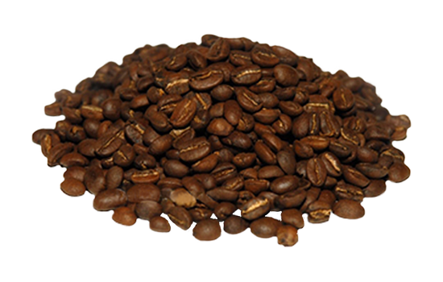
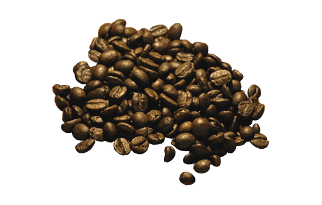

![ Kopi Luwak Найдорожча в світі кава родом з Індонезії з острова Суматра. Відома, насамперед, завдяки незовсім традиційному способу виробництва. У перекладі з індонезійського «Kopi» означає кава, а ось слово «Luwak» (цивета) це маленька тваринка, яка схожа на кота. Цей звір поїдає найкращі зерна з кавового дерева, а потім вони виходять з його організму неперетравленими, після чого фермери очищають зерна, сушать і обсмажують. Завдяки ферментам, що знаходяться в організмі у цивети, кава отримує дуже м'який та насичений смак. Щорічно індонезійці виробляють лише 453 кг кави цього сорту.](images/sort_luak.png){kind=link}
{kind=link}
{kind=link}
![ El Injerto Вид кави котрий зібрав тисячі поціновувачів в усьому світі. Росте він в Гватемалі в регіоні Уеуетенанго. До речі, в Гватемалі каву вирощують ще з початку XVIII століття, тому толк у цій справі знають. Найвідоміша плантація в світі знаходиться в місці під назвою Кобан. Там часто йдуть дощі і досить похмурий клімат . Якраз цей факт, на думку експертів, і вплинув на якість і смак кавових зерен. El Injerto отримав велику кількість різних нагород, в тому числі нагороджений призом Cup of Excellence в 2002, 2006 і 2007 роках.](images/sort_injerto.png){kind=link}
{kind=link}
{kind=link}
{kind=link}
{kind=link}
{kind=link}
Відгуки
Far far away, behind the word mountains, far from the countries Vokalia and Consonantia, there live the blind texts.
“Far far away, behind the word mountains, far from the countries Vokalia and Consonantia, there live the blind texts. Separated they live in Bookmarksgrove right at the coast of the Semantics, a large language ocean.”

Jean Doe, CEO FREEHTML5.co Creative Director
“Far far away, behind the word mountains, far from the countries Vokalia and Consonantia, there live the blind texts. Separated they live in Bookmarksgrove right at the coast of the Semantics, a large language ocean. Far far away, behind the word mountains, far from the countries Vokalia and Consonantia, there live the blind texts.”

John Doe, Senior UI FREEHTML5.co Creative Director
“Far far away, behind the word mountains, far from the countries Vokalia and Consonantia, there live the blind texts. ”

Chris Nash, Director FREEHTML5.co Creative Director